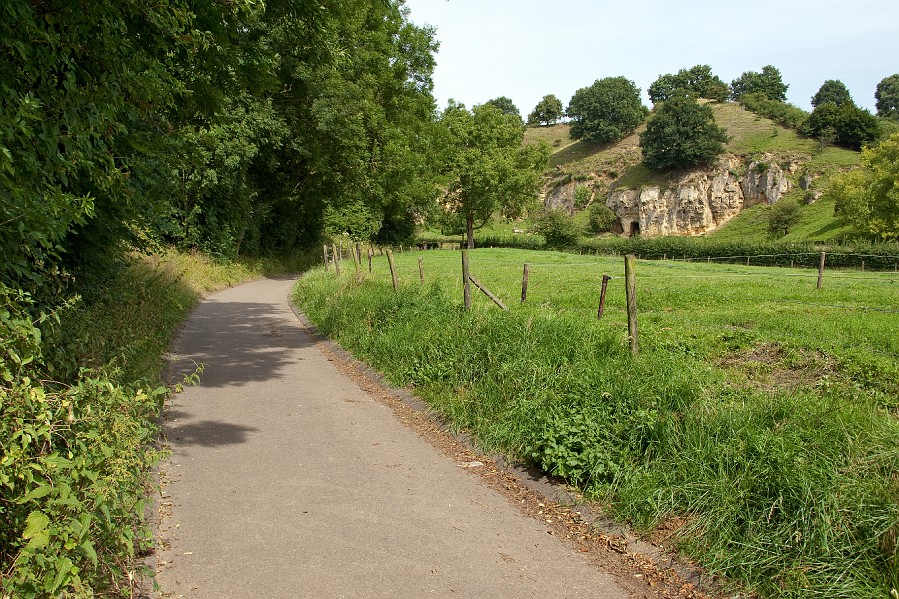
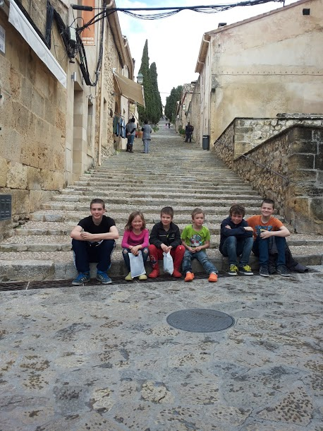
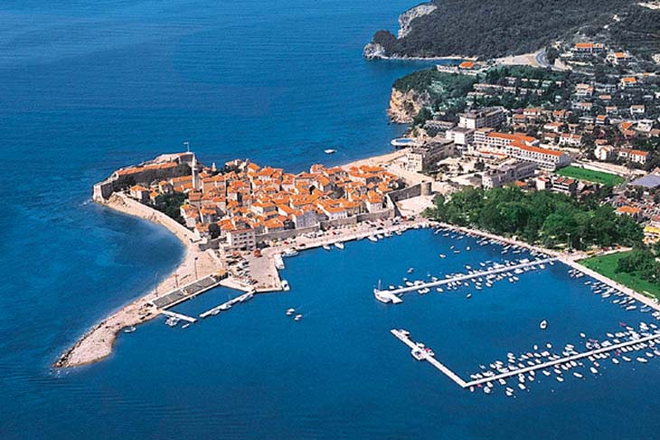
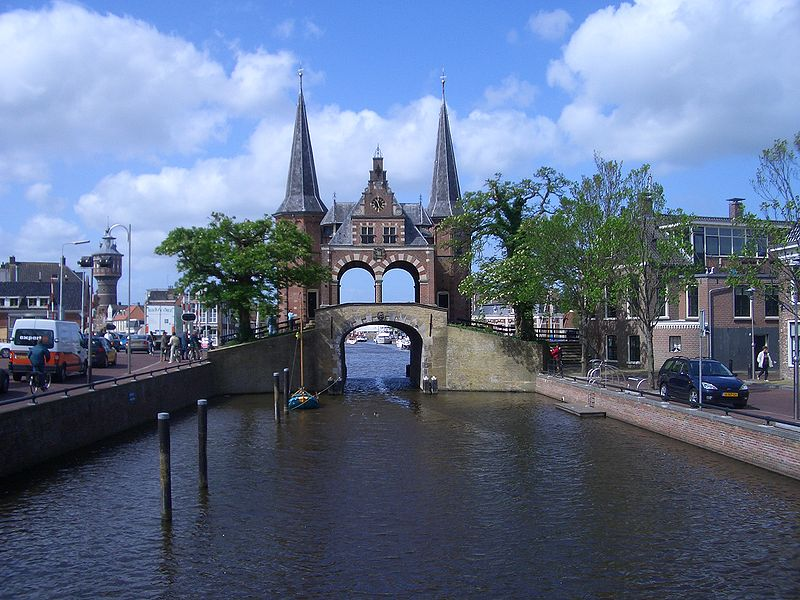
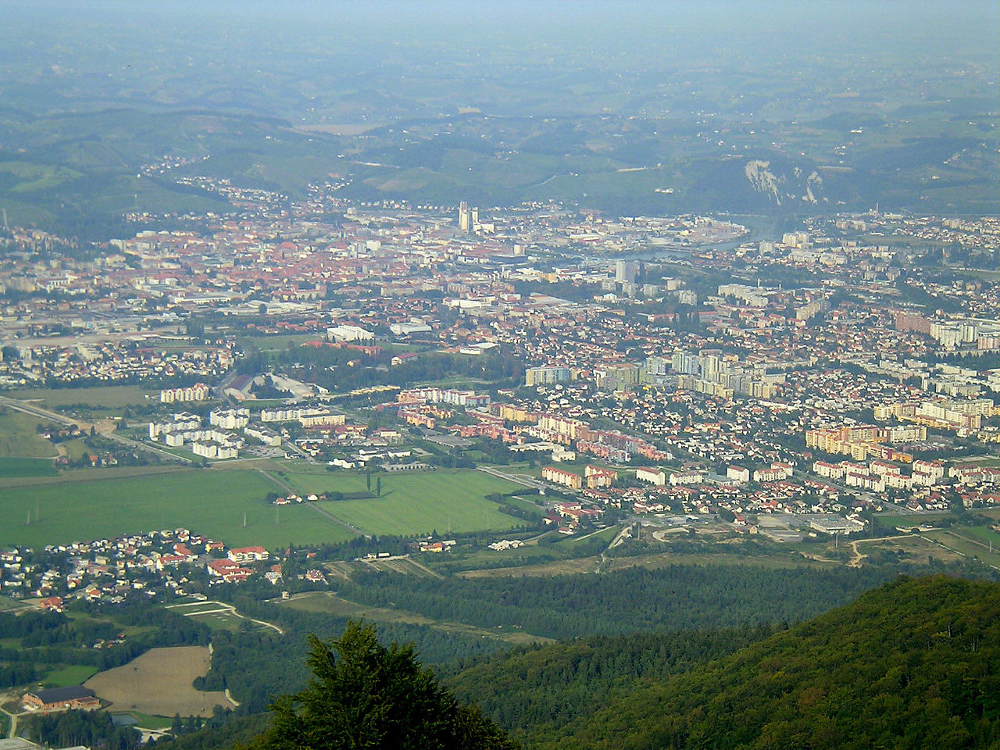
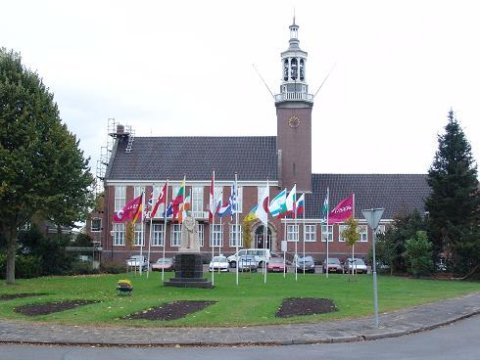
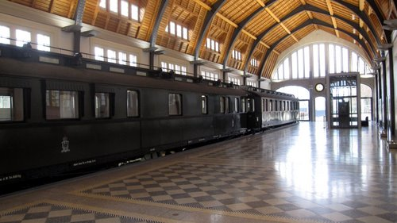

BlogAeroflot 2015Ik speelde het Aeroflot Open toernooi van 26 maart tot 6 april 2015 en behaalde daar mijn eerste GM norm.
Het rode plein Maastricht 2014Ik speelde het Limburg Open toernooi dat van 6-9 juni 2014 werd gehouden in Maastricht. Bemelerberg! Mallorca 2014From 23-29 March 2014 I played a tournament in Mallorca. The huge staircase European Chess Champion 2013!Budva City Dutch championship youth under the 20From 27 April - 5 May 2013 I played the Dutch Youth Chess Championship for under the 20. The water-tower of Sneek World Youth Chess Championship 2012From 8 til 18 November I played the World Youth Chess Championship what was held in Slovenia. The view over the city Maribor where The tournament was held Unive Tournament 2012From 19 till 27 October 2012 I played the Unive chess tournament. Potsdam Tournament!I played from 13 till 14 October a tournament in the small city of Potsdam. The playing hall |